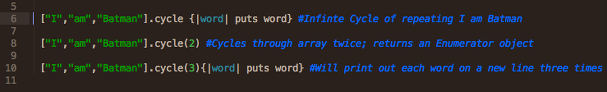
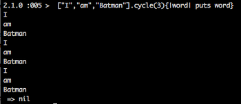
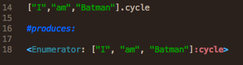
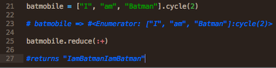

Cycle is an enumerable method, so first of all, it's important to recognize what an enumerable and an enumerator object are. I think it's best to think of these conceptually because, in a sense, they are pragmatic creations that exist on top of the fundamental layers of ruby.
Enumerable is a mixin module. What is a mixin module? Objects in Ruby can't inherit from multiple classes, which can be a problem because say you want to use the same method on a hash that you used on an array. You think, yes I should be able to do this because the iterable structure of this object would allow for such a method, but the inheritance rules of Ruby don't allow for methods to fall their way down into different classes. So how do you get around that? You create a module, which is essentially a databank of constants and methods and then you include it in whatever classes you want. Enumerable is such a module and, since it's included in a number of classes (Range, Hash, Array), it is mixed in. It is mixed in precisely because of the reason you would want to share these methods. The classes are similar enough--specifically, you can iterate through them-- that they can be manipulated in the same manner. It makes sense.
Enumerator, by contrast, is an object. But it is an object that is returned after an enumerable mixin method is called on another object, so let's first get to our method, cycle.
Cycle is a method included in the Enumerable mixin. It has a very intuitive name. It does exactly what it says it does; it cycles through something. If you don't pass an argument, it cycles on infinitely. If you pass an Integer as an argument, it cycles through the object for however many times specified. If you pass a block it executes the code on each iterable element in the object over however many cycles you specified. If you pass no block it returns an enumerator object.
Cycle provides a useful service for when you want to iterate over an object multiple times. The only other way to do this would be with some incrementer method with the object that is manipulated placed somewhere within it. It turns out looking like an ugly bit of code that could be improved upon, especially if you're pursuing the Ruby way!
Some questions you might ask are, "When is this method useful? How often would I use this anyway?" Well those are good questions because they lead to more involved use of Ruby and its methods. Let's move back to the Enumerator object. Let's use cycle to create one.
So as you can see, you've got an object linked to the method, cycle. This is essentially what the Enumerator object is. Like I said earlier, it's almost a conceptual object. It is an object that is enumerable in the way cycle is defined. Think of it this way, this cycle enumerator object can be cycled through infinitely. Once you get to the end of an iteration, you restart at the beginning the next time. Any enumerator object that isn't attached to cycle ends once the object iterates through one full time. There is no return to the first element. The iteration for that object is defined by the method that is called upon it.
So if you're following along, you might be getting a clearer picture of why this is helpful. You have an object, say an array. You want to have more control over that object; you want to make iterations restart, allow them to cycle. What do you do? You create a copy as a cycle enumerator object! Just like that, you have more power. You use that power to compliment your Ruby skills and incorporate other features to produce what you want.
Success! You have more control, and you can move on to bigger projects.